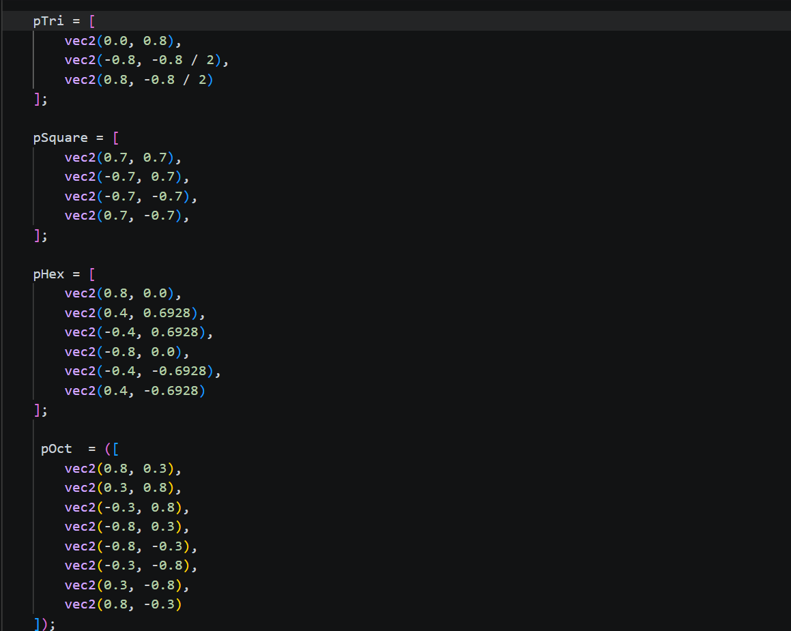
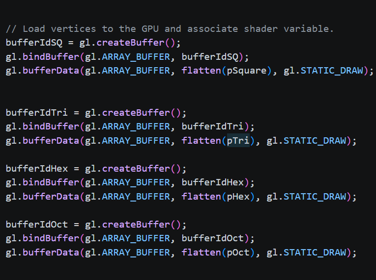
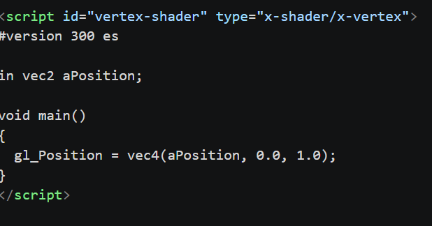
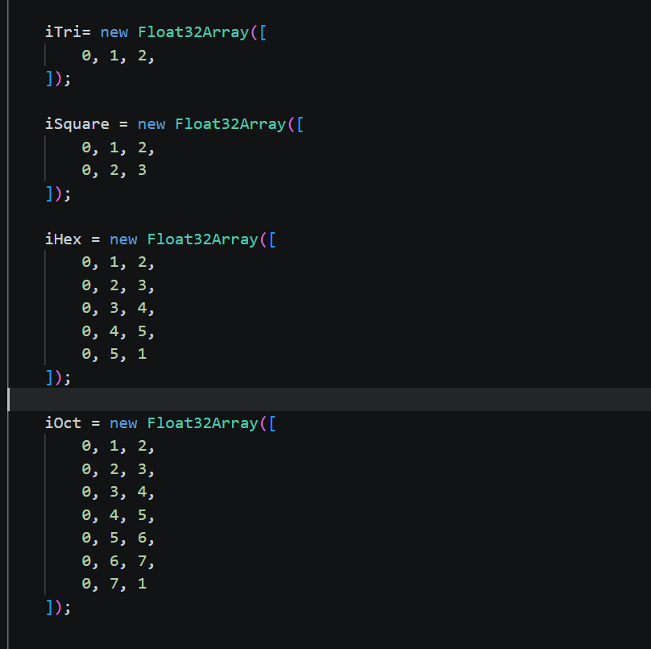
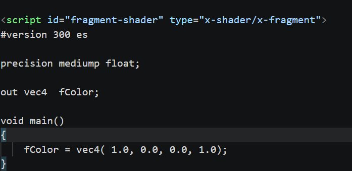

A demonstration of the graphics pipeline for multiple geometric shapes
The graphics pipeline is a sequence of steps that transforms 3D models into 2D images that can be displayed or rendering 2D shapes that can be dispalyed on a canvas It consists of several stages, including vertex creation, vertex shader, rasterization, fragment shader, and displaying the render. Each stage performs specific tasks to process the data and produce the final image.

Very similar if not the exact same to the A Simple House render, where we create a list of vertices, instead we are creating multiple lists for multiple shapes.. Each one of these lists "pTri, pSquare, pHex, and pOct", all represent the vertices on a triangle, square, hexogon, and otagon. Each entry in this list represents a location on the canvas in (x, y) coordinates, where the vertices are positioned. As you can see for example the hexagon has 6 entries, because a hexagon has 6 vertices. What helped me determine the coordinates of the vertices was imagining the canvas is like a typical 1 by 1 coordinate plane.



This stage involves processing the vertex data using a vertex shader, which is a function that runs on the GPU. Again very similar to the A Simple House render where the image on the left shows the creation of a vertex buffer which basically stores the vertex data in the GPU's memory, and also loading the vertex and fragment shader, but this time with multiple polygons. The middle image shows the vertex shader code, which takes the vertex positions and process them each individually. The right image shows how the vertices are connected to create the triangles. Triangles are very important to graphics rendering since triangles are the simplest polygon that can be used to create complex shapes. Each indice represents a vertex in a triangle that needs to be connected. like for example iTri(0, 1, 2) connects vertices 0, 1, and 2, which are the vertices in the list pTri, in order, so 0 is (0.0, 0.8), 1 is (-0.8, -0.8 / 2), and 2 is (0.8, -0.8 / 2).

Rasterization is the process of converting the triangles into fragments which represent pixels on the canvas. Rasterization is done automatically by the GPU, so there doesn't need to be any code for it, however it is still a crucial step in the graphics pipeline. The fragment shader is also very similar to the one in A Simple House render, only we are just rendering one color for all shapes and that would be red, so there is no need to pass the colors values into the framgent shader since they are all the same. We just directly apply the colors in the fragment shader.
The final step of the graphics pipeline would be displaying the render on to the canvas. This is done after fragment shading is done. The GPU produces the fragment colors and writes them to the framebuffer, which is directly linked to the canvas. The final image is a render of the multiple red polygons. This is step is also done automatically by the GPU, and is the step that is exactly the same across all renders.
The mathematics behind rendering this polygon is what makes this render a little more complicated than the render of the house. This is because this render invovles actually using geometric equations to determine where the vertices are. The numbers werent chose randomly, rather I used geometric equations to determine where the vertices are. These are real equations that determine how these shapes are created on a regular coordinate plane.
Each vertex is equal to: y = +/- 0.7 and x = +/- 0.7 <-- arbitrarily chosen values
Each Vertex is equal to: xk = rcos(2πk/6) and yk = rsin(2πk/6), and k = each vertex count
Each Vertex is equal to: xk = rcos(2πk/8) and yk = rsin(2πk/8), and k = each vertex count
This render of multiple polygons is similar to the other renders because it follows the same step by step process of the graphics pipeline: Vertex Creation > Vertex Shader > Rasterization > Fragment Shader > Display on Canvas. Just like the other renders, this render also uses the same vertex shader and fragment shader, but different vertex data and indices. This graphics pipeline mirrors the A Simple House pipeline, but instead we are using more vertices to more vertices and we use indices to connect the vertices to create triangle, as well as geometric equations to define the vertices. The process is entire similar although, which shows the commonality between rendering one shape and rendering multiple shapes.